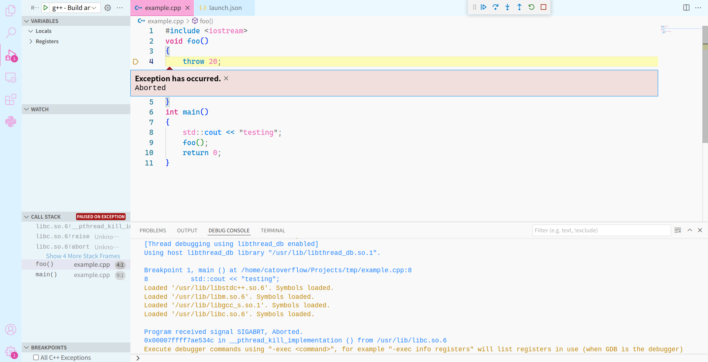

实验零¶
本学期的实验设计¶
不出意料的话，本学期的前三个实验和前几届相同，依次为裁剪 Linux 内核、编写 Shell 程序、完成多人聊天室，不过部分实验会在之前的设计基础上有所调整和优化。第四次实验主题仍处于待定状态，会在之后的课程中确定下来。具体的实验细节同学们可以参考前几次的课程实验安排：OSH-2021、OSH-2020 等（注意到链接的规律了吗 :3）。所有实验都可以使用 C/C++ 或是 Rust 完成，但是不能用 Go（简直是作弊.jpg）。
实验考察范围¶
前三次实验的考察内容和技能要求如下：
| 实验 | 主要内容 | 考察知识 | 所需技能 |
|---|---|---|---|
| 实验一 | 裁剪 Linux 内核 | Linux 启动过程、内核模块 | make、makefile 基础 |
| 实验二 | 编写 Shell 程序 | fork 等系统调用、I/O 重定向、多线程、中断 | 多线程编程、使用 syscall、中断处理 |
| 实验三 | 编写多人聊天室 | 进程调度、socket 复用、TCP 相关知识 | 多线程、面向 socket 编程、I/O 相关 syscall |
实验所考察的知识和课程进度同步，可以先跟着课程学习，不过所需的编程技能可能需要靠自己掌握。
Linux 实验环境¶
OSH 几乎所有实验都需要在 Linux 平台上完成、实现，所以本节期望你有一个可用的 Linux 工作环境（不限于本地）和基本的 Linux 使用能力。如果你是一个熟练的 Linux 用户，你可以跳过本节。
如果你是第一次接触 Linux，你可以在 USTC Vlab 上得到一个 Linux 的实验环境（注意：这不是虚拟机，是一个 LXC 容器，可能有部分实验无法在其上面完成）。
如果你内存充足、或者不太想在物理机上安装 Linux，可以尝试使用虚拟机运行 Linux。具体可以参照在 Windows 中使用虚拟机（By iBug）、在 macOS 中使用虚拟机（By Taoky）这两篇文章。
Linux 最基本的使用也可以从 LUG 的 Linux 101 教程 开始学习（如果没有时间也请看一下第三章的文件操作、第六章的重定向和第七章 Linux 上的编程）。
如果想了解更多有关 Linux 的技巧，可以看 Debian 教程或者 Arch Linux 文章索引。
不同平台兼容性¶
由于无法确定各个实验全貌，目前助教无法保证非软件 Linux 虚拟机的平台，如 WSL1/2、BSD、Vlab，能够完成所有的实验。 但我们在设计实验时将尽可能考虑到不同平台下的兼容性问题，并将第一时间更新下方的兼容性 tips 配合公告作为提醒：
| 平台 | 实验 | 出错现象 | 原因分析 | 解决方案 |
|---|---|---|---|---|
这里有一些基本分析：WSL1（即 WSL 初版）是微软魔改的内核，没有实现完整的 cgroups 和 IPC，如 fakeroot 也不能正常使用，可能对实验有影响；WSL2 是使用 Hyper-V 虚拟机实现、使用了完整的内核，应该不会干扰到实验的进行。「FreeBSD 提供了 Linux 32-bit 二进制的兼容，但是不支持 64-bit 的 Linux 二进制程序」，需参考实际使用状况。
编程语言要求¶
如实验设计中所述，本轮实验如无特殊声明均允许使用 C、C++、Rust 其中任意一种语言完成。 在下面几个章节中，我们将简单介绍需要掌握或是了解的 C、C++、Rust 语言知识。 值得注意的是，这些知识并不一定会在实验中用到，但是理解它们或许能够指导你的实际开发过程并减少在各个语言文档中探索的时间。
C 的要求¶
- 了解 C99 标准下几乎所有的 C 用法，这是考虑到 C 的标准语言特性并不太多，更进阶的用法也更倾向于依赖编译器特性或是标准用法的巧用；
- 了解基本的宏知识，例如宏函数中参数使用时需要括号包裹，这是因为调用 Linux API 时需要用到宏；
- 掌握查询 Linux API 文档的方法，无论是使用
mantldr或是直接查看网页版 man 文档;
C++ 的要求¶
- 掌握基本的 C 用法；
- 宏，如 C 要求所述；
- Linux API 文档，如 C 要求所述;
- 了解一些 Morden C++ 的用法，可以为你减少编程工作量；
关于 Modern C++
如果你选择使用 C++ 完成实验，那么请不要将 C++ 代码写得宛如 C 一样——Modern 的、现代的、C++11 标准后的 C++ 增添了众多强有力的工具，能够帮助你以更高效、更简洁的手段达成目标。
如需全方位的了解 Modern C++，推荐阅读《A Tour of C++》以及进阶的例如《Modern Effective C++》等书籍，其中详细讲解了 Modern C++ 中的一些设计理念和最佳实践。
额外的我们也给出一些 tips，来帮助你尽快地了解一些 C++ 工具（如 STL），以及阐述部分 Modern C++ 概念，或是协助回避困惑之处：
- 不必使用栈上的
int a[12]或是自行new int[12]来进行堆上分配，可以直接使用std::vector； std::string保证内部空间连续，因而可以配合s.resize()改变内部空间大小，并用s.c_str()或是&s[0]进行不可变或是可变访问，可以代替chat buf[N]；<memory>如shared_ptr可以实现智能指针，自动在合适的时刻释放资源，并允许像一个指针一样廉价地拷贝，可以配合std::thread等使用；std::string缺少 split 功能，但网络上有众多现成的实现；
Rust 的要求¶
关于 Rust
配置环境的教程可以在官网安装界面查看。 而相应的详细语言教程也可以在官网教程汇总界面按需查阅。 其中重点是 Rust Book 这份教程，其在高低层次上都对 Rust 进行了详细的解析。 而如果你之前只了解过 C 开发，可以着重关注 Rust Book 中的以下概念：
- Ownership，lifetime，borrow，这些是 Rust 最核心的概念之一；
- Cargo 的使用，从而完成 Rust 的依赖管理及编译等工作；
- 智能指针（smart pointer），C++
<memory>库中也有相似实现； - 并发编程，C++
<thread><mutex><condition_variable>等库中也有相似实现； - 函数式编程（functional programming），如
map的用法； - 模式匹配（pattern matching），如
match和if let的用法； - 基本的 unsafe Rust 用法，可能会在调用外部库时用到；
- async Rust，可能会在 coroutine 相关的实验中用到；
- 错误处理（error handling），Rust 错误处理与 Go 有类似之处，如有经验可以对照学习，但本次实验应该不会在错误处理上有较高要求，把握概念即可；
- Traits（有译作特质的），但本次实验应该不会涉及过多或过深；
其他的例如 Rust by Example 也是很优质的教程，也能让你迅速找到自己所需要的写法。
实验流程中我们在自愿的基础上鼓励使用 Rust 语言，但不会做进一步的要求。 如果你选择在实验中使用 Rust 语言，你依然可以从助教处获取一些语言使用上的基础帮助，并与其他同学在同一标准下进行评测。
实验中的优缺点¶
选择 Rust 可能会在本轮实验中遇见以下优缺点：
优点：
- Rust 的基础库某种程度上比 C++ 的基础库更全面而更易用；
- Rust 的内存安全保证可以在最大程度上让你避免遇到难以 debug 的 segmentation fault 问题；
- Rust 对于一些比较现代的技术，例如 coroutine，有相对更好的支持，在实验中需要实现类似情况时会更方便;
缺点：
- Rust 的学习曲线稍显陡峭，尤其是从原汁原味的 C 出发的话；
- Rust 不能直接使用 Linux API（由众多 C header 文件提供），下文我们将详细讨论这个问题；
外部库的要求¶
如优缺点中所言，尽管 Rust 标准库相对较丰富，但需要调用特定 Linux API 时，Linux 提供的是 C header 文件。 尽管 Rust 可以利用 FFI 和 binding 生成利用这些 C header 文件完成相关调用，但是操作太过繁杂而无必要。 所以如无特地声明，我们默认允许使用 Rust 语言时调用以下这些外部库（后续可能会增充此列表，但不会删减）：
nixlibc
如你不满足于这些外部库、希望使用其他外部库时，请尽量提前询问助教。 无论是否提前询问，在最后验收实验时，助教都会参考以下条件对除上述列表以外的外部库进行评定：
- 此外部库是否仅是 Linux C API FFI？如是，则允许；
- 此外部库是否仅是 Linux C API FFI 并进行了 safe wrap？如是，则允许；
- 此外部库使用方法是否与原本 C 中调用的方法相类似？如是，参考相似程度允许；
- 此外部库是否破坏了原本的实验设计目标？如是，则禁止；如否，参考和实验目标相关程度允许；
如果一个外部库被禁止，实验中对应项目将可能被酬情扣分。
使用 gdb debug¶
在本学期的实验中，你可能会写出各式各样的 bug，用好 debugger 往往可以大幅提升你的调试效率。本节会对 C/C++ 常用的 gdb (GNU Project debugger) 进行介绍。
例如，在以下的程序中，运行到 throw 20 时会抛出一个异常
#include <iostream>
void foo()
{
throw 20;
}
int main()
{
std::cout << "testing";
foo();
return 0;
}
如果你直接编译（g++ example.cpp）并运行，会得到以下输出：
./a.out
terminate called after throwing an instance of 'int'
[1] 12079 IOT instruction (core dumped) ./a.out
此时只知道程序发生了错误，但并不知道是哪里出了问题。这时候就可以使用 gdb 来进行调试（取代简单的 print）：
在编译时使用 g++ example.cpp -g，完成编译后，运行 gdb a.out，会进入以下界面：
<some intro here>
For help, type "help".
Type "apropos word" to search for commands related to "word"...
Reading symbols from a.out...
(gdb)
此时输入 run 然后回车，gdb 就会运行你的程序，得到：
Starting program: /home/catoverflow/Projects/tmp/a.out
[Thread debugging using libthread_db enabled]
Using host libthread_db library "/usr/lib/libthread_db.so.1".
terminate called after throwing an instance of 'int'
Program received signal SIGABRT, Aborted.
0x00007ffff7ae534c in __pthread_kill_implementation () from /usr/lib/libc.so.6
(gdb)
说明程序发生了错误，并回到终端。输入 bt (back trace) 并回车就可以看到程序的调用栈：
(gdb) bt
#0 0x00007ffff7ae534c in __pthread_kill_implementation () from /usr/lib/libc.so.6
#1 0x00007ffff7a984b8 in raise () from /usr/lib/libc.so.6
#2 0x00007ffff7a82534 in abort () from /usr/lib/libc.so.6
#3 0x00007ffff7dfc7ee in __gnu_cxx::__verbose_terminate_handler () at /usr/src/debug/gcc/libstdc++-v3/libsupc++/vterminate.cc:95
#4 0x00007ffff7e08c4c in __cxxabiv1::__terminate (handler=<optimized out>) at /usr/src/debug/gcc/libstdc++-v3/libsupc++/eh_terminate.cc:48
#5 0x00007ffff7e08cb9 in std::terminate () at /usr/src/debug/gcc/libstdc++-v3/libsupc++/eh_terminate.cc:58
#6 0x00007ffff7e08f5e in __cxxabiv1::__cxa_throw (obj=<optimized out>, tinfo=0x555555557db0 <typeinfo for int@CXXABI_1.3>, dest=0x0)
at /usr/src/debug/gcc/libstdc++-v3/libsupc++/eh_throw.cc:95
#7 0x00005555555551a4 in foo () at example.cpp:5
#8 0x00005555555551c6 in main () at example.cpp:10
调用栈将函数调用自底向上显示，最上面的就是最后被调用的函数，在这里上面的都是链接的系统库，下面的两个则是我们自己的函数。这时就很容易发现错误发生在 foo 中，代码的第五行。
最后，输入 q 并回车就可以退出了。除了上面的 bt，常用的指令还有 break（添加断点），用 attach 命令连接到线程（在多线程调试中非常有用）等等，具体的用法可以查阅相关文档。
编译时参数 -g 的作用？
在终端输入 man gdb 并找到 -g 的帮助文档，可以看到：
-g Produce debugging information in the operating system's native format (stabs, COFF, XCOFF, or DWARF). GDB can work with this
debugging information.
简单来说，这个参数会在编译的时候加入额外的调试信息，比如代码所在的行号（在 gdb 报错的时候非常有用，还可以拿来插入断点）等等。否则 gdb 调试的就是一个简单的二进制文件，能输出的信息会少很多。
你也可以不加 -g，然后对比一下 gdb 的输出。
使用 IDE 进行 debug¶
在命令行里用 gdb debug 虽然简单，但是很多时候不够直观方便。在 VS、VS Code 等 IDE 里，你也可以用 IDE 自带的 debug 功能（有些是基于 gdb 的，但是提供了非常方便的操作界面）。下面以 VS Code 为例：

直接点击 debug，选择 g++ 作为编译器后，就可以看到上面的界面（因为助教的主题比较好看，可能和你们的不一样 :3）。界面左侧显示了异常时各变量的值（本例子中没有展开，在上侧）和调用栈，下方的 Debug Console 显示了 gdb 的输出，主界面直接标出了异常的位置，非常方便。除了上面的这些功能，还可以点击代码行号左侧加入断点，或者在左栏的 Watch 中加入监视的变量，以及同时监控多个子线程。
和 VS Code 类似，VS 等 IDE 也提供了强大的调试功能，希望同学们能在实验中进行探索，提高自己的代码效率。